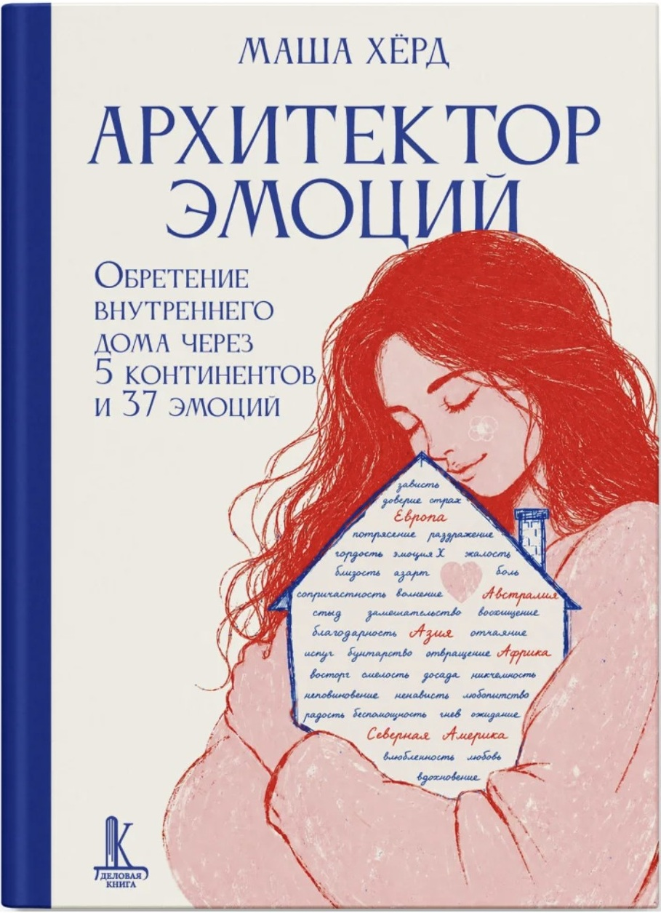

МОИ НАХОДКИ · К 38-ЛЕТИЮ
То, что делает жизнь моей.
К своему 38-летию я собрала вещи, сервисы, знания и маленькие радости, которые люблю. Это не список идеальных покупок — это экскурсия по моей жизни.
Для дочки, для здоровья, для творчества и просто для кайфа от жизни. Здесь есть и то, чем пользуюсь, и то, о чём пока мечтаю.
Посмотреть находкиПОЧЕМУ ЭТО ЗДЕСЬ
Не «надо купить».
А «вот что я люблю».
Не всё хорошее в жизни нужно покупать. Но есть вещи и инструменты, которые действительно радуют, вдохновляют и освобождают время. Я делюсь ими так, как поделилась бы с подругой за чашкой чая.
МНЕ НРАВИТСЯ · ПОЛЬЗУЮСЬ · МЕЧТАЮ
Мои маленькие находки
Выбирай раздел или смотри всё подряд — без необходимости покупать что-либо.

МОЯ СОБСТВЕННАЯ КНИГА
Книга, которую я написала сама.
«Архитектор эмоций» — моя книга из собственных историй. Про чувства, ошибки, принятие себя и право владеть своим прошлым. Одна из больших мечт, которая уже стала реальностью.
Познакомиться с книгой ↗НЕ ВСЕ МЕЧТЫ МОЖНО КУПИТЬ
Больше гулять.
Больше жить.
Больше неспешных прогулок, фильмов, лекций из любопытства, творчества без дедлайнов и времени с семьёй. Самые желанные вещи для меня часто вообще нельзя положить в корзину — это свобода распоряжаться своей жизнью.
Немного о ссылках и бонусах
Здесь есть обычные ссылки, а есть мои персональные реферальные ссылки и промокоды. Если ты воспользуешься ими, я могу получить баллы, кредиты сервиса, бонус на покупки или денежную комиссию — это отмечено на карточках. Участие в программах не делает мои рекомендации универсальными для всех.
Скидки и условия программ могут меняться и зависеть от страны. Перед покупкой проверь итоговую сумму и правила. Фотографии товаров принадлежат указанным брендам и магазинам и служат для иллюстрации находок; со временем я хочу заменить их своими.
Покупай только то, что нужно тебе. Я гораздо больше хочу, чтобы у тебя было больше хорошей жизни, а не больше вещей.